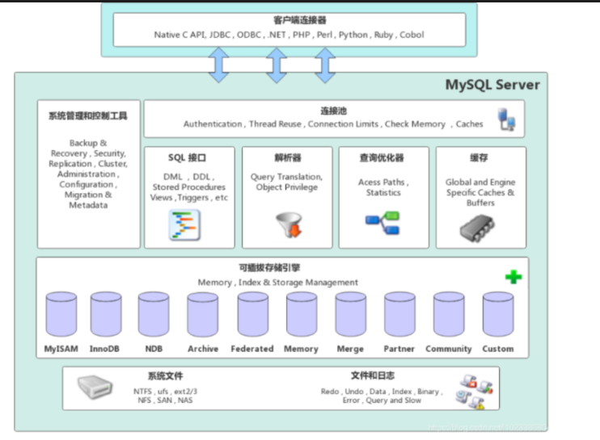
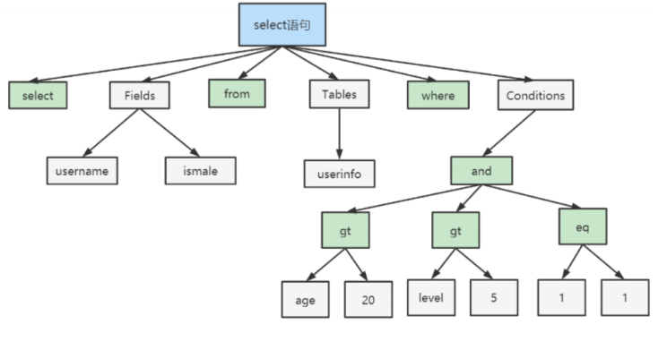
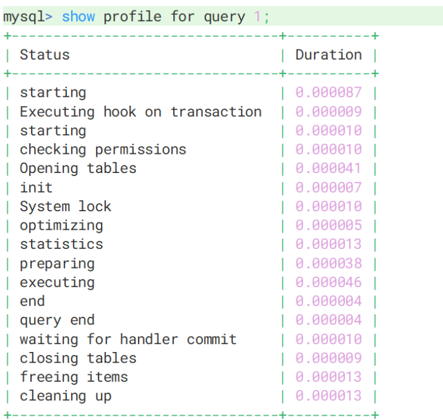
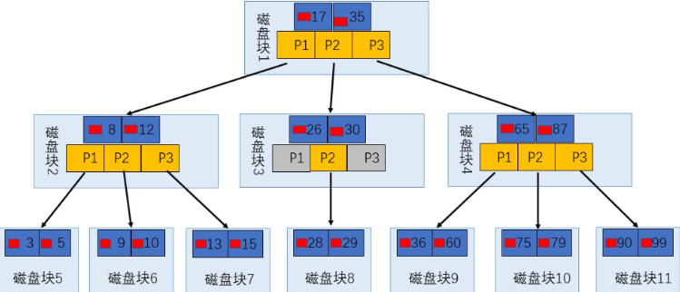
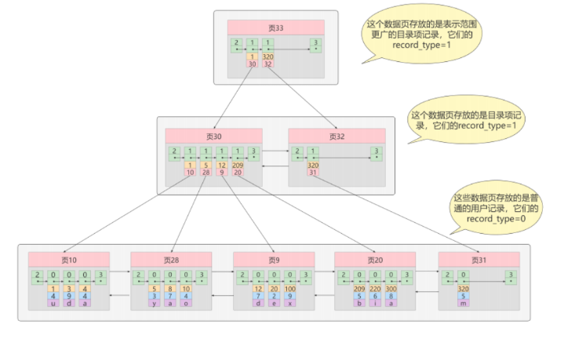
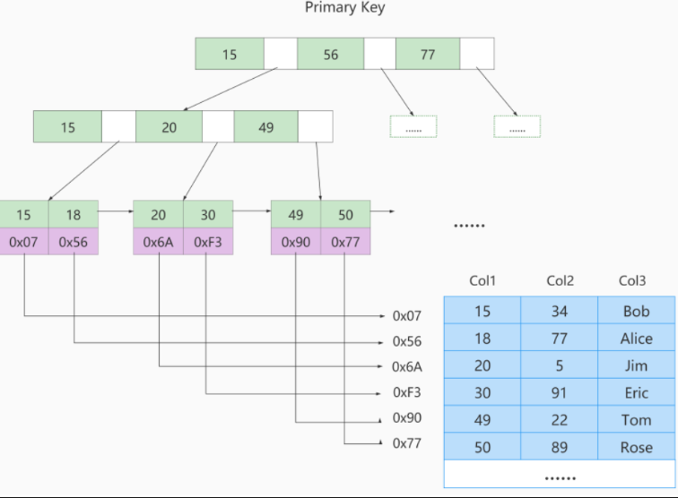
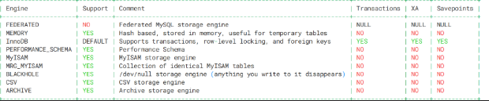
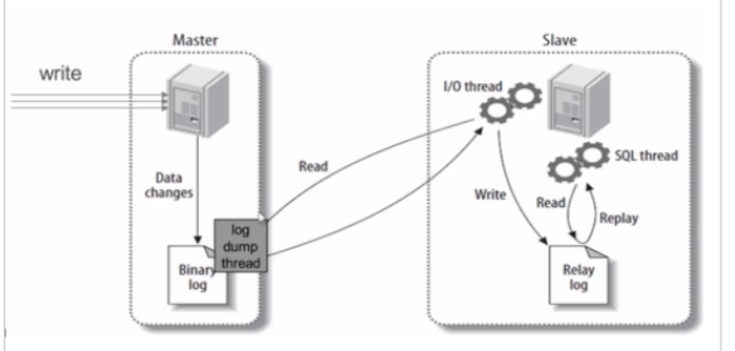

MySQL 高级
一、安装部署与环境配置
1.1 Docker 部署 MySQL 8.0
# 拉取镜像
docker pull mysql:8.0.30
# 或本地加载
docker load -i mysql-8.0.30.tar
# 启动容器
docker run -di \
--name mysql \
-p 3306:3306 \
-v mysql_data:/var/lib/mysql \
-v mysql_conf:/etc/mysql \
-e MYSQL_ROOT_PASSWORD=your_password \
mysql:8.0.30
# 进入容器（设置编码防止中文乱码）
docker exec -it -e LANG=C.UTF-8 mysql bash
1.2 字符集
MySQL 8.0 之前，默认字符集为 latin1（不支持中文）。从 MySQL 8.0 开始，默认字符集改为 utf8mb4，从根本上避免中文乱码。
| 字符集 | 字节范围 | 说明 |
|---|---|---|
utf8mb3（旧称 utf8） |
1～3 字节 | 阉割版，无法存储 emoji 表情 |
utf8mb4 |
1～4 字节 | 正宗 UTF-8，支持所有 Unicode 字符 |
字符集陷阱
- MySQL 5.7 中的
utf8=utf8mb3 - MySQL 8.0 中的
utf8=utf8mb4 - 建库建表建议显式指定
utf8mb4，不依赖默认值
1.3 大小写敏感规则
| 操作系统 | 规则 |
|---|---|
| Windows | 全部不区分大小写 |
| Linux | 数据库名、表名、表别名 严格区分；列名和列别名 不区分；关键字和函数名 不区分 |
| 值 | 含义 |
|---|---|
0 |
按存储的大小写比较（Linux 默认） |
1 |
表名以小写存储，比较时不区分大小写 |
2 |
表名按原样存储，但比较时转为小写 |
注意
lower_case_table_names 在 MySQL 8.0+ 初始化后不可修改，必须在首次初始化前设置。
1.4 sql_mode（SQL 严格模式）
从 MySQL 5.7 开始，sql_mode 默认设置为严格模式，拒绝不规范的数据插入。
-- 查看当前模式
SHOW VARIABLES LIKE 'sql_mode'; -- session 级别
SELECT @@session.sql_mode; -- 当前会话
SELECT @@global.sql_mode; -- 全局
-- 设置模式
SET SESSION sql_mode = 'STRICT_TRANS_TABLES,...'; -- 当前会话生效
SET GLOBAL sql_mode = 'STRICT_TRANS_TABLES,...'; -- 全局（需重连生效，重启失效）
永久配置（/etc/my.cnf）：
[mysqld]
sql-mode = "STRICT_TRANS_TABLES,NO_ZERO_IN_DATE,NO_ZERO_DATE,ERROR_FOR_DIVISION_BY_ZERO,NO_ENGINE_SUBSTITUTION"
| 模式 | 说明 |
|---|---|
ONLY_FULL_GROUP_BY |
GROUP BY 时，SELECT 只能包含聚合函数或 GROUP BY 中的字段 |
STRICT_TRANS_TABLES |
事务表中插入非法值直接报错并回滚 |
NO_ZERO_IN_DATE |
不允许日期/月份为零 |
NO_ZERO_DATE |
不允许插入 0000-00-00 |
ERROR_FOR_DIVISION_BY_ZERO |
除零报错而非返回 NULL |
NO_ENGINE_SUBSTITUTION |
需要的存储引擎不可用时报错而非自动替换 |
二、MySQL 逻辑架构

2.1 整体分层
MySQL 采用插件式存储引擎架构，从上到下分为四层：
┌──────────────────────────────────────────┐
│ Connectors（连接器） │ ← 客户端（JDBC/Navicat/Python...）
├──────────────────────────────────────────┤
│ MySQL Server │
│ ┌────────────────────────────────────┐ │
│ │ 连接层（Connection） │ │ ← TCP 握手、认证、权限、线程池
│ ├────────────────────────────────────┤ │
│ │ 服务层（Services） │ │ ← 解析、优化、缓存、内置函数
│ │ SQL Interface / Parser / Optimizer│ │
│ │ Caches & Buffers / Built-in Funcs │ │
│ ├────────────────────────────────────┤ │
│ │ 引擎层（Storage Engine） │ │ ← InnoDB / MyISAM / Memory
│ └────────────────────────────────────┘ │
├──────────────────────────────────────────┤
│ 存储层（File System） │ ← 数据文件、索引文件、日志文件
└──────────────────────────────────────────┘
2.2 各层详解
连接层
- 客户端建立 TCP 三次握手连接
- MySQL 进行身份认证（用户名 + 密码）
- 认证失败 →
Access denied for user - 认证成功 → 加载权限表，后续权限判断依赖此时读到的权限
- 从线程池获取线程处理交互
服务层
| 组件 | 作用 |
|---|---|
| SQL Interface | 接收 SQL 命令，返回结果。支持 DML、DDL、存储过程、视图、触发器等 |
| Parser（解析器） | 词法分析 → 语法分析 → 语义分析，生成语法树（AST） |
| Optimizer（优化器） | 生成执行计划，选择最优查询路径 |
| Caches & Buffers | 查询缓存（MySQL 8.0 已移除） |
解析器三步骤：

查询缓存已废弃
MySQL 8.0 移除了 Query Cache，因为表级别的任何写操作都会导致整个缓存失效，在高并发写入场景下弊大于利。
引擎层
存储引擎负责数据的存储和提取，通过 API 与 Server 层通信。不同引擎有不同的存储结构和算法。
存储层
所有数据、表定义、索引、日志都以文件形式存放在文件系统上。
2.3 SQL 执行流程分析
-- 开启 profiling
SET profiling = 1;
-- 执行你的 SQL
SELECT * FROM users WHERE age > 20;
-- 查看最近的 SQL 执行概况
SHOW PROFILES;
-- 查看具体某条 SQL 的详细执行过程
SHOW PROFILE FOR QUERY <query_id>;

2.4 存储引擎
| 特性 | InnoDB（默认） | MyISAM | Memory |
|---|---|---|---|
| 事务 | ✅ 支持 | ❌ | ❌ |
| 行级锁 | ✅ | ❌（表锁） | ❌（表锁） |
| 外键 | ✅ | ❌ | ❌ |
| 崩溃恢复 | ✅ | ❌ | ❌ |
| 数据存储 | 磁盘 | 磁盘 | 内存 |
| 缓存 | 索引 + 数据 | 仅索引 | N/A |
| 适用场景 | 高并发、事务场景 | 读多写少、简单查询 | 临时数据、缓存 |
引擎选择
- 99% 场景直接用 InnoDB
- 纯只读报表可考虑 MyISAM（节省资源）
- 临时中间结果可用 Memory（注意重启丢数据）
-- 建表时指定引擎
CREATE TABLE users (id INT) ENGINE = InnoDB;
-- 修改已有表的引擎
ALTER TABLE users ENGINE = MyISAM;
三、索引底层原理
3.1 什么是索引
MySQL 官方定义：索引（Index）是帮助 MySQL 高效获取数据的数据结构。
本质：将磁盘上的数据组织成高效查找的数据结构（B+ 树），减少 I/O 次数。
| 优点 | 缺点 |
|---|---|
| 提高数据检索效率，降低 I/O 成本 | 创建和维护索引耗费时间 |
| 保证数据唯一性（唯一索引/主键） | 占用额外磁盘空间 |
| 加速排序和分组 | 降低写操作性能（需同步维护索引） |
3.2 B 树（B-Tree）
B 树是一种多路平衡查找树。

核心特点：
- 所有节点（含非叶子节点）都存储键值和数据指针
- 数据可能在任何一层被找到
- 所有叶子节点在同一层
为什么不适合做数据库索引：
- 范围查询效率低 —— 找到第一个值后需重新从根遍历
- 非叶子节点存数据指针 → 每个磁盘块存储的键更少 → 树更高 → I/O 更多
3.3 B+ 树（MySQL InnoDB 的选择）
B+ 树是 B 树的改进版，是 InnoDB 索引的标准实现。

核心特点：
- 非叶子节点只存索引键，不存数据
- 所有数据都在叶子节点
- 叶子节点通过双向链表相连
为什么 MySQL 选择 B+ 树
- 范围查询高效：叶子节点是有序链表，找到起点后可顺序遍历
- I/O 更少：非叶子节点只存键，单页可存更多键 → 树更矮 → 查询 I/O 更少
- 性能稳定：所有查询都必须到叶子节点，路径长度一致
| 对比项 | B 树 | B+ 树 |
|---|---|---|
| 数据存储 | 所有节点都存 | 仅叶子节点存 |
| 范围查询 | 低效（需重新遍历） | 高效（链表顺序遍历） |
| 树高度 | 较高 | 更矮（单页存更多键） |
| 查询稳定性 | 不稳定（可能中途找到） | 稳定（必须到叶子） |
3.4 InnoDB 中的索引
聚簇索引（主键索引）
- B+ 树叶子节点存储完整的行数据
- 一张表只能有一个聚簇索引
- 数据按主键顺序物理存储
- 无主键时：优先用唯一非空索引 → 都没有则创建隐藏的 6 字节 Row ID
二级索引（非聚簇索引）
- 叶子节点存储 索引键值 + 主键值
- 一张表可以有多个二级索引
- 查询需要回表：二级索引找主键 → 聚簇索引找完整数据
| 特性 | 聚簇索引 | 二级索引 |
|---|---|---|
| 叶子节点内容 | 完整行数据 | 索引键 + 主键值 |
| 数量 | 每表 1 个 | 每表多个 |
| 查询步骤 | 一次查找 | 可能需要回表（二次查找） |
联合索引与最左前缀原则
| 查询条件 | 索引使用情况 |
|---|---|
WHERE a = 1 |
✅ 完全生效 |
WHERE a = 1 AND b = 2 |
✅ 完全生效 |
WHERE a = 1 AND b = 2 AND c = 3 |
✅ 完全生效 |
WHERE b = 2 |
❌ 失效（跳过最左列 a） |
WHERE a = 1 AND c = 3 |
⚠️ a 生效，c 失效 |
WHERE a = 1 AND b > 2 AND c = 3 |
⚠️ a、b 生效，c 失效（范围后失效） |
最左前缀口诀
联合索引就像电话号码，必须从第一位开始拨，跳着拨打不通。范围查询（>、<、LIKE 'xx%'）之后的列索引失效。
覆盖索引
查询所需的所有列都已包含在索引中，无需回表。
MyISAM 索引结构（对比理解）
MyISAM 的索引是非聚簇的，叶子节点存储的是数据记录的物理地址（文件偏移量），而非主键值。

四、索引操作
4.1 创建索引
4.2 查看 & 删除索引
-- 查看索引
SHOW INDEX FROM table_name;
-- 删除普通索引
DROP INDEX idx_name ON table_name;
-- 删除主键索引
ALTER TABLE table_name DROP PRIMARY KEY;
-- 若有 AUTO_INCREMENT，需先去掉自增：
-- ALTER TABLE table_name MODIFY id INT;
4.3 索引使用场景
应该建索引
WHERE、GROUP BY、ORDER BY频繁出现的字段- 区分度（Cardinality）高的列
- 多表 JOIN 的连接字段（优先被驱动表）
- 联合索引中查询最频繁的列放最左
不应建索引
- 查询中用不到的字段
- 数据量很小的表（全表扫描更快）
- 大量重复数据的列（如性别）
- 频繁增删改的列（索引维护成本高）
- 冗余索引（已有
(a, b)，再建(a)是多余的）
五、索引优化实战
5.1 EXPLAIN 性能分析
EXPLAIN 输出的核心字段：
| 字段 | 说明 | 关注点 |
|---|---|---|
id |
查询编号，id 越大越先执行 | 查询趟数越少越好 |
table |
当前行涉及的表 | — |
type ⭐ |
访问类型，最重要的性能指标 | 见下方排序 |
possible_keys |
可能用到的索引 | — |
key |
实际使用的索引 | 为 NULL 说明没用索引 |
key_len |
索引使用的字节数 | 联合索引中越大越好 |
ref |
与索引比较的列或常量 | — |
rows |
预估扫描行数 | 越小越好 |
filtered |
过滤效率（百分比） | 越高越好 |
Extra ⭐ |
额外信息 | 见下方说明 |
type 性能等级（从优到劣）
| type | 含义 | 示例 |
|---|---|---|
system |
表仅一行（MyISAM） | — |
const |
主键/唯一索引 = 常量 | WHERE id = 1 |
eq_ref |
JOIN 时主键/唯一索引 = 另一列 | JOIN ... ON a.id = b.a_id |
ref |
普通索引 = 常量 | WHERE name = '张三' |
range |
索引范围扫描 | WHERE age BETWEEN 20 AND 30 |
index |
全索引扫描 | 覆盖索引但扫描全部 |
ALL |
全表扫描 | 必须优化 |
Extra 常见值
| Extra | 含义 | 性能 |
|---|---|---|
Using index |
覆盖索引，无需回表 | ✅ 优秀 |
Using index condition |
索引下推，引擎层提前过滤 | ✅ 良好 |
Using where |
Server 层过滤，未走索引 | ⚠️ 较差 |
Using filesort |
无法用索引排序，文件排序 | ⚠️ 较差 |
Using temporary |
使用了临时表 | ⚠️ 较差 |
Using join buffer |
JOIN 未有效用索引 | ⚠️ 需优化 |
5.2 索引下推（Index Condition Pushdown）
什么是索引下推
MySQL 5.6 引入的优化：在存储引擎层，利用联合索引的后续列提前过滤，减少回表次数。
场景示例：联合索引 (name, age)，查询：
无索引下推：
name 索引 → 查出所有"张%"的 id → 全部回表 → Server 层按 age=30 过滤
有索引下推：
name 索引 → 引擎层用 age=30 过滤 → 只回表符合条件的行 ← 减少回表
5.3 索引失效场景
以下情况会导致索引失效
| 失效原因 | 示例 | 说明 |
|---|---|---|
| 违反最左前缀 | WHERE b = 2（索引 (a, b, c)） |
跳过了最左列 |
| 索引列计算 | WHERE age + 1 = 25 |
函数/运算导致无法使用索引 |
| 隐式类型转换 | WHERE phone = 13800000000（phone 是 VARCHAR） |
字符串字段用数字查 |
| 左模糊查询 | WHERE name LIKE '%张' |
LIKE 前缀通配符 |
| 范围查询右侧 | WHERE a = 1 AND b > 2 AND c = 3 |
b 后面的 c 失效 |
OR 连接 |
WHERE a = 1 OR b = 2 |
除非两边都有索引，否则全表扫 |
IS NULL / IS NOT NULL |
视数据分布，优化器可能选择全表 | — |
!= 或 <> |
WHERE age <> 20 |
通常不走索引 |
优化口诀
5.4 关联查询优化
| 原则 | 说明 |
|---|---|
| 小表驱动大表 | 让数据量小的表做驱动表 |
| 被驱动表加索引 | 驱动表加索引效果有限 |
| 连接字段类型一致 | 类型/编码不一致会导致索引失效 |
Inner Join 驱动表选择
MySQL 优化器会自动选择小表做驱动表（两张都有索引时），否则选没有索引的表。
5.5 排序 & 分组优化
| 场景 | 能否用索引 |
|---|---|
ORDER BY + 无 WHERE / LIMIT |
可能走 index 扫描（覆盖索引场景） |
ORDER BY + WHERE |
WHERE 和 ORDER BY 都用上索引最佳 |
| 排序方向不同 | ORDER BY a ASC, b DESC → 索引失效 |
-- 无法用索引排序（type = ALL）
EXPLAIN SELECT * FROM emp ORDER BY name;
-- 可以走索引（覆盖索引，type = index）
EXPLAIN SELECT name FROM emp ORDER BY name;
-- LIMIT 也可作为"过滤"让索引生效
EXPLAIN SELECT * FROM emp ORDER BY name LIMIT 10;
5.6 单路排序 vs 双路排序
| 双路排序（旧） | 单路排序（新） | |
|---|---|---|
| 磁盘读取 | 两次（先读排序字段 → 排序 → 再读其他字段） | 一次（读取所有字段后排序） |
| 性能 | 慢 | 快 |
| 内存 | 少 | 多 |
| IO 类型 | 随机 IO | 顺序 IO |
-- 查看阈值（默认 4KB）
SHOW VARIABLES LIKE '%max_length_for_sort_data%';
SHOW VARIABLES LIKE '%sort_buffer_size%';
优化策略
- 行记录大 + 数据量小 → 增大
max_length_for_sort_data，强制单路 - 行记录小 + 数据量大 → 减小
max_length_for_sort_data，强制双路 - 最佳方案：只
SELECT需要的列，减少行大小
5.7 覆盖索引优化
-- ❌ 不好：SELECT * 需要回表
SELECT * FROM users WHERE name = '张三';
-- ✅ 好：idx_name_age 已覆盖所需列
SELECT name, age FROM users WHERE name = '张三';
六、慢查询日志
6.1 开启与配置
-- 开启慢查询日志
SET GLOBAL slow_query_log = 1;
-- 查看配置和日志路径
SHOW VARIABLES LIKE '%slow_query_log%';
-- 设置阈值（默认 10 秒，大于此值才记录）
SHOW VARIABLES LIKE '%long_query_time%';
SET GLOBAL long_query_time = 0.1; -- 测试用，实际按业务定
注意
- 设置后需重新登录才生效
- 等于
long_query_time不记录，只记录严格大于的值 - 开启慢查询日志有轻微性能影响，生产环境按需开启
6.2 mysqldumpslow 分析工具
# 查看帮助
mysqldumpslow --help
# 返回记录最多的 10 条 SQL
mysqldumpslow -s r -t 10 /var/lib/mysql/slow.log
# 访问次数最多的 10 条 SQL
mysqldumpslow -s c -t 10 /var/lib/mysql/slow.log
# 按时间排序，含 left join 的前 10 条
mysqldumpslow -s t -t 10 -g "left join" /var/lib/mysql/slow.log | more
| 参数 | 说明 |
|---|---|
-s |
排序方式：c（次数）、t（时间）、r（返回行数）、l（锁定时间） |
-t |
返回前 N 条 |
-g |
正则匹配 |
-a |
不将数字/字符串抽象为 N/S |
七、视图（View）
视图是一张虚拟表，不存储实际数据，只是保存了 SELECT 查询的定义。
7.1 基本语法
-- 创建/替换视图
CREATE OR REPLACE VIEW v_emp_dept AS
SELECT e.name, e.salary, d.dept_name
FROM employees e
JOIN departments d ON e.dept_id = d.id
WHERE e.status = 'active';
-- 查询视图（与查表无异）
SELECT * FROM v_emp_dept WHERE salary > 5000;
-- 删除视图
DROP VIEW v_emp_dept;
7.2 优缺点
| 优点 | 缺点 |
|---|---|
| 简化复杂查询 | 每次查询都执行底层 SQL，可能很慢 |
| 隐藏敏感字段（权限控制） | 视图不能建索引（无物理数据） |
| 逻辑独立性（底层改结构不影响上层） | 多层嵌套后执行计划难以分析 |
| — | 部分视图不可更新（含聚合、GROUP BY 等） |
八、MVCC（多版本并发控制）⭐
MVCC 是 InnoDB 实现 Read Committed 和 Repeatable Read 隔离级别的核心机制。
核心目标：解决读-写冲突，实现无锁并发 —— 读不阻塞写，写不阻塞读。
8.1 隐式字段
InnoDB 每行数据都有三个隐藏列：
| 字段 | 大小 | 说明 |
|---|---|---|
DB_TRX_ID |
6 字节 | 事务 ID，标识最后一次修改该行的事务 |
DB_ROLL_PTR |
7 字节 | 回滚指针，指向 Undo Log 中的上一个版本 |
DB_ROW_ID |
6 字节 | 无主键时自动生成，作为聚簇索引 |
8.2 Undo Log
Undo Log 记录数据修改前的旧值，两大用途：
- 事务回滚：
ROLLBACK时恢复旧值 - MVCC 快照读：通过 Undo Log 构建历史版本，实现读不阻塞写
BEGIN;
UPDATE t_emp SET age = 30 WHERE id = 1; -- age 原来是 25
-- Undo Log 记录了 age=25 的旧值
ROLLBACK; -- 利用 Undo Log 恢复 age=25
8.3 版本链
多个事务修改同一行数据时，通过 DB_ROLL_PTR 将各版本串联成链表：
8.4 快照读 vs 当前读
| 类型 | 语句 | 特点 |
|---|---|---|
| 快照读 | 普通 SELECT |
通过 MVCC 读取历史快照，不加锁 |
| 当前读 | SELECT ... FOR UPDATE |
读取最新版本，加锁 |
SELECT ... LOCK IN SHARE MODE |
共享锁 | |
INSERT / UPDATE / DELETE |
排他锁 |
8.5 Read View（读视图）
Read View 是事务执行时生成的系统快照，包含 4 个关键信息：
| 字段 | 含义 |
|---|---|
creator_trx_id |
当前 Read View 创建者的事务 ID |
m_ids |
创建时系统中所有活跃事务的 ID 列表 |
m_low_limit_id |
m_ids 中的最小值（下界） |
m_up_limit_id |
m_ids 中的最大值 + 1（上界） |
可见性判断规则
判断某行版本（row_trx_id）对当前事务是否可见：
- 小于下界（
row_trx_id < m_low_limit_id）→ ✅ 可见（已提交） - 大于等于上界（
row_trx_id >= m_up_limit_id）→ ❌ 不可见（还未开始） - 在区间内：
- 在
m_ids中 → ❌ 不可见（活跃中） - 不在
m_ids中 → ✅ 可见（已提交）
一句话：比最小活跃事务更早的已提交，比最大活跃事务更新的看不到，中间的看是否在活跃列表中。
8.6 RC vs RR 级别下 MVCC 的差异
| 隔离级别 | Read View 创建时机 | 效果 |
|---|---|---|
| Read Committed | 每次 SELECT 都创建新 Read View | 每次都能读到最新已提交数据（不可重复读） |
| Repeatable Read | 只在事务开始时创建一次，后续复用 | 整个事务看到的数据一致（可重复读） |

九、MySQL 三大日志
9.1 Redo Log（重做日志）
| 特性 | 说明 |
|---|---|
| 层级 | InnoDB 引擎层日志 |
| 作用 | 保证持久性（D），崩溃恢复 |
| 原理 | 修改数据前先写 Redo Log（WAL：Write-Ahead Logging） |
| 格式 | 物理日志，记录"在某个数据页上做了什么修改" |
| 循环写 | 固定大小，循环使用 |
9.2 Undo Log（回滚日志）
| 特性 | 说明 |
|---|---|
| 层级 | InnoDB 引擎层日志 |
| 作用 | 保证原子性（A），事务回滚 + MVCC |
| 格式 | 逻辑日志，记录"反操作"（如 INSERT → DELETE） |
9.3 Binlog（二进制日志）
| 特性 | 说明 |
|---|---|
| 层级 | MySQL Server 层日志（所有引擎都有） |
| 作用 | 主从复制 + 数据恢复（时间点恢复） |
| 格式 | 追加写入，不会循环 |
Binlog 三种格式
记录原始 SQL 语句。
- 日志量小，节省磁盘和网络
- ❌
NOW()、RAND()、UUID()等非确定性函数会导致主从不一致
记录每行数据的实际变化（Before/After Image）。
- ✅ 数据一致性最高，主从严格一致
- ❌ 日志体积大，尤其批量操作时
默认使用 STATEMENT 模式。
- 检测到非确定性函数时自动切换为 ROW
- STATEMENT 与 ROW 的折中方案
9.4 三大日志对比
| Redo Log | Undo Log | Binlog | |
|---|---|---|---|
| 所属层 | 引擎层（InnoDB） | 引擎层（InnoDB） | Server 层 |
| 用途 | 崩溃恢复（持久性） | 回滚 + MVCC（原子性） | 主从复制 + 恢复 |
| 日志类型 | 物理日志 | 逻辑日志 | 逻辑 + 物理 |
| 写入方式 | 循环写 | 追加写 | 追加写 |
| 崩溃后 | 用于恢复未刷盘的数据 | 用于回滚未完成的事务 | 用于重放恢复 |
十、高可用架构
10.1 CAP 定理
分布式系统中，三者只能选其二：
| 特性 | 含义 |
|---|---|
| Consistency（一致性） | 读操作返回最新写操作的结果 |
| Availability（可用性） | 非故障节点在合理时间内返回响应 |
| Partition Tolerance（分区容错性） | 网络分区时系统仍能工作 |
实际分布式数据库通常选择 CP 或 AP。
10.2 读写分离架构
┌─────────────┐
│ 应用层 │
└──────┬──────┘
│
┌────────┴────────┐
│ 中间件/代理层 │ ← ShardingSphere / MyCat
└────────┬────────┘
│
┌──────────┼──────────┐
▼ ▼ ▼
┌──────┐ ┌──────┐ ┌──────┐
│ Master│ │ Slave│ │ Slave│
│ (写) │ │ (读) │ │ (读) │
└──────┘ └──────┘ └──────┘
| 原则 | 说明 |
|---|---|
| 主库 | 处理 INSERT、UPDATE、DELETE + 事务操作 |
| 从库 | 处理 SELECT 查询 |
| 一主多从 | 查询负载均匀分散 |
| 多主多从 | 提升吞吐 + 高可用 |
10.3 数据库分片
垂直分片（纵向拆分）
- 按业务拆分：不同库负责不同业务模块
- 核心理念：专库专用
用户库(user_db) 订单库(order_db) 商品库(product_db)
├── user ├── order ├── product
├── user_profile ├── order_item ├── category
└── address └── payment └── sku
水平分片（横向拆分）
- 按规则拆分：相同表结构分散到多个库/表
- 常见规则：
id % N、范围分片、哈希分片
阿里巴巴开发手册建议：单表 > 500 万行或 > 2GB 才考虑分库分表。
10.4 主从同步原理

Step 1: Master 将数据变更写入 Binlog
↓
Step 2: Slave 的 IO Thread 连接 Master，请求 Binlog
↓
Step 3: Master 的 Binlog Dump Thread 发送 Binlog（加锁→发送→解锁）
↓
Step 4: Slave 的 IO Thread 写入 Relay Log（中继日志）
↓
Step 5: Slave 的 SQL Thread 读取 Relay Log，重放操作
10.5 一主多从配置（Docker）
主从同步注意
- 密码插件需改为
mysql_native_password（caching_sha2_password不支持非加密连接） SHOW MASTER STATUS的File和Position必须准确填写- 主从解绑：
STOP SLAVE→RESET SLAVE ALL
十一、ShardingSphere-JDBC
官方文档：ShardingSphere 文档
11.1 快速集成
<parent>
<groupId>org.springframework.boot</groupId>
<artifactId>spring-boot-starter-parent</artifactId>
<version>3.0.5</version>
</parent>
<dependencies>
<dependency>
<groupId>org.apache.shardingsphere</groupId>
<artifactId>shardingsphere-jdbc-core</artifactId>
<version>5.4.0</version>
</dependency>
<dependency>
<groupId>org.yaml</groupId>
<artifactId>snakeyaml</artifactId>
<version>1.33</version>
</dependency>
</dependencies>
11.2 读写分离配置
shardingsphere.yaml：
# 模式配置
mode:
type: Standalone
repository:
type: JDBC
# 数据源配置
dataSources:
write_ds:
dataSourceClassName: com.zaxxer.hikari.HikariDataSource
driverClassName: com.mysql.cj.jdbc.Driver
jdbcUrl: jdbc:mysql://192.168.1.10:3306/db_user
username: root
password: your_password
read_ds_0:
dataSourceClassName: com.zaxxer.hikari.HikariDataSource
driverClassName: com.mysql.cj.jdbc.Driver
jdbcUrl: jdbc:mysql://192.168.1.10:3307/db_user
username: root
password: your_password
read_ds_1:
dataSourceClassName: com.zaxxer.hikari.HikariDataSource
driverClassName: com.mysql.cj.jdbc.Driver
jdbcUrl: jdbc:mysql://192.168.1.10:3308/db_user
username: root
password: your_password
# 读写分离规则
rules:
- !READWRITE_SPLITTING
dataSourceGroups:
readwrite_ds:
writeDataSourceName: write_ds
readDataSourceNames:
- read_ds_0
- read_ds_1
loadBalancerName: random
# 负载均衡算法
loadBalancers:
random:
type: RANDOM
round_robin:
type: ROUND_ROBIN
# 打印实际执行的 SQL
props:
sql-show: true
11.3 水平分片配置
水平分片主键
水平分片后，不能使用 MySQL 自增主键（会导致 ID 重复）。应使用雪花算法或分布式 ID 生成器。
rules:
- !SHARDING
tables:
t_order:
# 行表达式：2个库 × 2张表 = 4个物理节点
actualDataNodes: order_ds_${0..1}.t_order_${0..1}
# 分库策略
databaseStrategy:
standard:
shardingColumn: user_id
shardingAlgorithmName: db_inline
# 分表策略
tableStrategy:
standard:
shardingColumn: id
shardingAlgorithmName: table_inline
shardingAlgorithms:
db_inline:
type: INLINE
props:
algorithm-expression: order_ds_${user_id % 2}
table_inline:
type: INLINE
props:
algorithm-expression: t_order_${id % 2}
11.4 行表达式
使用 ${ expression } 或 $->{ expression } 标识 Groovy 表达式：
| 语法 | 示例 | 展开结果 |
|---|---|---|
| 范围 | ${0..2} |
0, 1, 2 |
| 枚举 | ${[a, b, c]} |
a, b, c |
| 计算 | $->{user_id % 2} |
0 或 1 |
| 笛卡尔 | ds_${0..1}.t_${[a,b]} |
ds_0.t_a, ds_0.t_b, ds_1.t_a, ds_1.t_b |
11.5 雪花算法（Snowflake）
雪花算法是 Twitter 开源的分布式 ID 生成方案，生成 64 位 long 类型 ID：
┌──────────────────┬────────────┬─────────┬──────────────┐
│ 1 bit (符号) │ 41 bit 时间戳 │ 10 bit 机器ID │ 12 bit 序列号 │
│ 0 (正数) │ ~69年 │ 1024台 │ 4096/毫秒 │
└──────────────────┴────────────┴─────────┴──────────────┘
| 优势 | 说明 |
|---|---|
| 全局唯一 | 不同机器生成的 ID 不同 |
| 趋势递增 | 按时间排序，有利于 B+ 树索引 |
| 高性能 | 本地生成，无网络开销 |
| 高可用 | 无中心化依赖 |
11.6 跨分片查询（核心痛点）
跨分片查询
当查询条件未包含分片键时，ShardingSphere 无法定位目标库/表，会执行广播查询（所有库所有表都查一遍），性能严重下降。
| 场景 | 行为 | 性能 |
|---|---|---|
| 无分库键 + 无分表键 | 全库全表扫描 | ❌ 最差 |
| 有分库键 + 无分表键 | 单库内所有表扫描 | ⚠️ 较差 |
| 无分库键 + 有分表键 | 所有库内精准表扫描 | ⚠️ 较差 |
| 有分库键 + 有分表键 | 单库单表精准路由 | ✅ 最优 |
解决方案
- 查询务必带上分片键
- 非分片键字段查用 ES / ClickHouse 等搜索引擎
- 使用 基因法（在 ID 中嵌入分片信息）
- 定期归档冷数据到 OLAP 系统